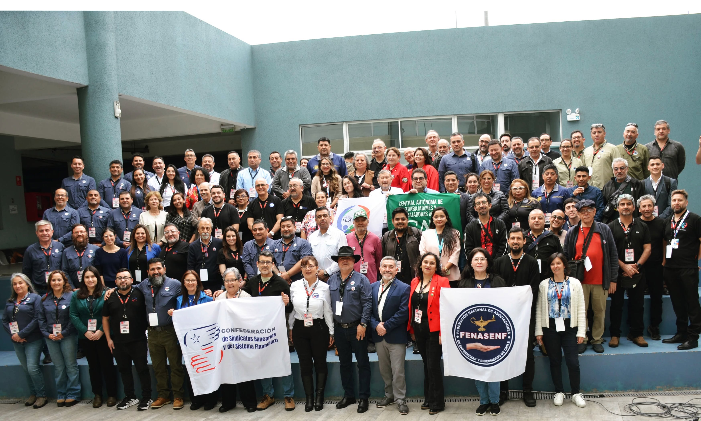

Un buen comienzo
El Plenario en Antofagasta y la reconstrucción del sindicalismo activo, democrático de base. Fragmentación, externalización y la urgencia de la solidaridad de clase.

Recién terminaron los dos largos días de discusión y participación en Antofagasta. Fueron un buen comienzo para la reconstrucción de un sindicalismo activo, democrático de base, poderoso, con fuerza. Una organización basada en la solidaridad de clase que reúne los y las trabajadores que están sufriendo las consecuencias de la fragmentación en sus trabajos.
Ciento ochenta dirigentes sindicales y activistas nos juntamos en Antofagasta, en el norte minero del país. Antofagasta donde vivía Recabarren, organizador de los mineros del salitre, organizador que quería crear una sociedad nueva donde las y los trabajadores viviéramos felices.
Él respondió a la pregunta "¿Qué es lo que queremos?" con estas palabras:
"Queremos vivir bien; eso es todo. La organización industrial capitalista no nos permite poder vivir bien, porque nos obliga a soportar un régimen de esclavitud, de explotación y de opresión".
Las cosas no han cambiado mucho desde cuando escribió esas líneas.
La organización del Plenario de Antofagasta
El Plenario fue organizado en forma novedosa y distinta a lo común de los casos de discusión. Importante fue el equipo de más o menos diez personas encargadas de dar forma al debate.
Dos o tres de ellos habían construido una aplicación para celular, donde podías ingresar comentarios o preguntas sobre cada una de las cuatro presentaciones centrales. Funcionó de esta manera: un/a experto/a presenta un análisis del tema, escuchamos durante 45 minutos más o menos e ingresamos a la aplicación del celular nuestros comentarios y preguntas.
Luego, pasa algo muy original. Se fusionan —por así decirlo— las preguntas o comentarios con contenidos similares en una sola más general usando la Inteligencia Artificial, entonces unos 20 comentarios se fusionan en tres. Luego el/la "experta" responde a estas inquietudes generales.
Es decir, los/las expertas hablan y nosotros respondemos, ingresando nuestros temas en la aplicación del celular. Luego, una pausa para desayuno, almuerzo y onces, y volvemos para escuchar un panel de 8 personas más o menos, la mayoría dirigentes, que responden —cada un/a— a una pregunta planteada por los organizadores y que tiene mucho que ver con la presentación.
Ellos/as hablan y nosotros, otra vez, ingresamos nuestros comentarios y preguntas por celular, se fusionan estos comentarios por IA y los/las del panel responden a las inquietudes. Así se organizó la discusión durante los dos días.
Los grandes temas de discusión fueron: martes, Libertad Sindical en el siglo XXI y La radicalización del Plan laboral durante el gobierno de Kast; miércoles, Sindicato, tecnología y externalización y Movimiento sindical en Chile.
La fragmentación avanza
Que la fragmentación (es decir la división) en el proceso productivo —en la minería, la salud, los bancos, el transporte, los colegios o las salmoneras— y su contraparte que es la externalización de sectores fragmentados, está avanzando muy rápido y tenemos que responder.
Que el BHP, que incluye las minas Escondida y Spence, trasladó el centro de operaciones de camiones independientes —que se controlan remotamente— a Santiago y se convirtió esa parte de la empresa en un centro externalizado, subcontratado. Cuando la/os 300 trabajadoras/es de esa unidad salieron en huelga durante 15 días, la empresa usó los trabajadores de planta para reemplazarlos.
Otro ejemplo, en la industria salmonera, las empresas usan tanto la alta tecnología como la fuerza matonesca. Es la Armada que da permiso a la empresa de usar buzos, según las condiciones del mar, pero la Armada toma esa decisión según las fotos del mar enviadas por la empresa. Esos malditos suelen enviar fotos de las condiciones cuando el mar estaba bueno días atrás, aunque las condiciones de hoy son peligrosas. La Armada da su permiso según las fotos, los buzos entran a trabajar y a veces vuelven en cajones, muertos. La Inspección de Trabajo en Chiloé ni siquiera tiene una lancha para hacer una fiscalización.
Y bajo del mar, debajo de las redes salmoneras, las empresas usan robots submarinos para inspeccionar las condiciones, usan brazos robóticos en los packing salmoneros y así aumentan los despidos.
Organizarnos para no reaccionar
Las empresas, el capital, se está reorganizando y nosotros los y las trabajadores reaccionamos no más. Y el momento ha llegado para hacer más que reaccionar. Necesitamos nuestras propias soluciones a la fragmentación.
Frente a la fragmentación de la producción, ¿qué hacemos? ¿cuál es nuestra solución?
Creo que una respuesta —que no ha salido totalmente clara en el debate todavía— es que las empresas sí miran al proceso productivo como una totalidad integrada de sectores fragmentados. Ellos manejan su negocio, su capital acumulado, como una totalidad. Y nosotros tenemos que mirar a la producción también así.
Que la producción de los miles de toneladas de concentrado de cobre que salen de Escondida en el mineroducto, no va a ninguna parte si los/las trabajadoras de mantención de los filtros de prensa en Puerto Coloso no hacen su pega y hay un bloqueo. Hay fragmentación "operacional" por así decirlo, pero hay integración.
Por lo tanto, tenemos que vernos como parte de un trabajador colectivo, integrado, por así decirlo.
El trabajador colectivo es la combinación de las fuerzas de trabajo de múltiples trabajadoras y trabajadores productivos que, cooperando entre sí, funcionan como un solo organismo para generar un producto y crear las ganancias.
¿Ese párrafo describe la producción que integra Coloso con la mina Escondida, o el trabajo de "colectivo" en un supermercado, hospital, salmonera o banco? Yo creo que sí… ¿qué piensas tú?
Nuestra solución: la solidaridad
La respuesta al fraccionamiento que salió de las discusiones, fue que nuestra solución es la solidaridad. Solidaridad es la política del trabajador colectivo, por así decirlo. Y otra palabra para el trabajador colectivo es la clase trabajadora. Integramos la producción fragmentada cuando somos solidarias/os y parte de una clase de trabajadoras y trabajadores.
Ahora bien, es bien poco solidario trabajar al lado de otro/a, y cuando llega la hora de almuerzo, voy a un casino porque soy de planta, y mi compañero de trabajo, que hace la misma pega que yo, almuerza en otro casino porque es subcontratado/a. Poco solidario también si él (o ella) se ducha en un lado y yo en otro. O que toma un bus a la faena y yo tomo otro. ¿Poco solidario no es cierto?
O si gana una tercera parte de lo que gano yo porque es subcontratado/a. Ser parte de un trabajador colectivo, parte de una clase de trabajadores, tiene que traer igual salario para igual trabajo, por lo menos.
Ese derecho lo han ganado los sindicatos en BHP Australia. Ahora bien, parte de su larga campaña para ganar fue convencer a políticos y hasta el primer ministro —parece— que apoyar ese derecho es parte de ser persona civilizada.
Nadie nos representa
Otro tema del debate en el Plenario que se me quedó pegado en el cerebro es que nadie nos representa. Ni los políticos, ni las empresas y tampoco los dirigentes burocratizados (y vendidos).
Nuestros representantes parlamentarios no son confiables, eso ya lo sabemos. Deberían ser confiables, honestos, nuestros, pero no lo son. ¿Qué hacemos con ellos entonces… cómo obligarlos a ser nuestros representantes verdaderos?
En las discusiones del Plenario, salieron dos respuestas a esta pregunta, como lo recuerdo.
Primero, que no podemos olvidar que son ellos los que hacen las leyes, entonces tenemos que convencerlos (las) de representarnos sí o sí. No tenemos alternativa.
Y segundo, que con nuestra fuerza solidaria somos capaces de obligarlos (las) a ser más confiables. Por lo tanto, necesitamos fuerza propia, fuerza que nace de la democracia de las bases, la solidaridad, el trabajo y dedicación de un buen dirigente/a, la unión, huelga.
En fin, se discutió que los y las dirigentes tienen que ser independientes, deben tener autonomía de la política parlamentaria. ¿Qué piensas tú?
Sin fuerza propia no vamos a ninguna parte, es lo que necesitamos. En fin, cómo construir esa solidaridad, esa fuerza, fue el tema de todo el Plenario.
Una nota personal
Los organizadores del Plenario abrieron mesas y espacio donde podía armar un puesto para la venta de libros que escribí sólo, y también con Gonzalo Durán de la Fundación Sol. Muy amable de sus partes.
Bueno, llevé los libros que cabían en la maleta que llevé en el avión y se vendieron casi todos. Y cuando los firmé, dejé mi teléfono también, entonces podemos hablar sobre las discusiones que son parte central de los libros. Hablamos en el puesto de libros de muchas cosas… desde Recabarren hasta el sindicalismo democrático de Clotario y la revolución de Carlitos Marx. ¡Buenos tiempos, gracias!
Y una reflexión que repito. Si trabajo en Escondida, en Puerto Coloso, en un colegio de Antofagasta, tengo mamá y abuela, soy más que un trabajador, soy parte de la sociedad también y tengo que actuar en ese sentido. Y cuando las y los trabajadores del hospital de Antofagasta compran los insumos que utilizan en su pega, porque no hay o son de mala calidad, ese hecho me toca, le toca a mi mamá y mi abuela.
¡Obvio que soy parte de la sociedad y mi lucha por mejorar las condiciones del trabajador colectivo es parte de la lucha por mejorar la sociedad!
¡Saludos!
Fuente original: Socialismo Desde Abajo — Un buen comienzo. Texto reproducido con fines informativos y de debate. Los derechos de autoría pertenecen a su autor/a original.